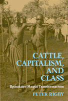

<body bgcolor="#FFFFFF" text="#000000" link="#0000FF" vlink="#CC0000" alink="#CC0000"><center><hr width="350" size="1" align="center" noshade>An anthropologist explores the failure of rural development policies in pastoral societies<hr width="350" size="1" align="center" noshade><p><a href="https://cdcshoppingcart.uchicago.edu/Cart/ChicagoBook.aspx?ISBN=9780877229544&&PRESS=temple" target="_top">Buy this book!</a> | <a href="https://cdcshoppingcart.uchicago.edu/Cart/Cart.aspx?PRESS=temple" target="_top">View Cart</a> | <a href="https://cdcshoppingcart.uchicago.edu/Cart/Cart.aspx?PRESS=temple" target="_top">Check Out</a></p><p></p></center><!--none//--><h1>Cattle, Capitalism, and Class</h1>
<H2>Ilparakuyo Maasai Transformations</H2>
<h3>Peter Rigby</h3>
<P>cloth 0-87722-954-6 $75.50, Aug 92, <FONT COLOR=#990033>Out of Stock Unavailable</FONT>
<br>paper 1-56639-204-7 $25.95, Feb 94, <FONT COLOR=#990033>Out of Stock Unavailable</FONT>
<BR> 272 pp
6x9
15&nbsp;halftones
</P><BLOCKQUOTE><I>"...a first-class project which brings a lot to debates going on in African studies about Ilparakuyo Maasai. This is a highly original contribution."</I>
<br>&#151<b>V.Y. Mudimbe</b>, Duke University<I></I></BLOCKQUOTE>
<p>Focusing on the Ilparakuyo Maasai of Kenya and Tanzania, Peter Rigby discusses why third world development policies with regard to pastoral societies are inappropriate and likely to fail. A political economy of development, Rigby maintains, must incorporate historical, cultural, linguistic, and even aesthetic dimensions of the peoples involved. Using ethnography and other research materials, and basing his understanding on his years of living with the people he writes about, the author illuminates the culture and explores the prospects for a distinct section of pastoral Maasai&#151the Ilparakuyo. In addition, he attempts to develop a historical materialist theory of language in relation to a specific East African culture.
<p>While rural development is a priority in many recently independent third world countries, it is often not designed for the benefit of the producer. Rigby analyzes the language and customs of the Maasai to chronicle the changes forces upon them by both colonial and post-colonial governments, and the complexity of their responses to these challenges. The cultures, languages, and aspirations of such pastoral societies are often overlooked by development planners. Rigby describes how government expectations should be based on an understanding and respect of such social conditions.
<BR>&nbsp;<h2>Reviews</h2>
<p><I>"The writing is lucid, concepts sophisticated, and the conclusions fully in accord with the material presented.... There is real brilliance throughout, a rare trait in these days.... I believe it will have a wide readership in the field, eventually becoming a classic."</I>
<br>&#151<b>Stanley Diamond</b>, Professor of Anthropology, New School for Social Research
<BR>&nbsp;<h2>Contents</h2><P>
<p>Photographs
<br>Figures and Sketch Maps
<br>Preface
<br>Acknowledgments
<br>1. Introduction
<br>2. The "Last of the Maasai": Self-Fulfilling Prophecy or Frustrated Death Wish?
<br>3. Class Formation in Historical Perspective
<br>4. Ideology, Religion, and Capitalist Penetration
<br>5. Pastoralism, Egalitarianism, and the State
<br>6. Some Ilparakuyo Views of Peripheral Capitalism
<br>7. The Dynamics of Contemporary Class Formation
<br>8. Ilparakuyo Maasai Transformations: African Episteme and Marxian Problematic
<br>Appendix
<br>Notes
<br>Bibliography
<br>Index
</P><BR>&nbsp;<H2>About the Author(s)</H2>
<table><tr><td valign="top"><img src="/tempress/authors/893_au.gif" height="90" width="75"></td><td width="100%" valign="middle"><p><b>Peter Rigby</b> is Professor of Anthropology at Temple University.</P></td></tr></table>
<BR><H2>Subject Categories</H2>
<p><A HREF="/tempress/anthropology.html" TARGET="_top">Anthropology</a>
</p>
<p align="center"><a href="https://cdcshoppingcart.uchicago.edu/Cart/ChicagoBook.aspx?ISBN=9780877229544&&PRESS=temple" target="_top">Buy this book!</a> | <a href="https://cdcshoppingcart.uchicago.edu/Cart/Cart.aspx?PRESS=temple" target="_top">View Cart</a> | <a href="https://cdcshoppingcart.uchicago.edu/Cart/Cart.aspx?PRESS=temple" target="_top">Check Out</a></p><p><font face="Arial" size="1"><a href="copyright.html" onMouseOver="window.status='Web Copyright Policy';return true;" onMouseOut="window.status=''" title="Web Copyright Policy">&copy;</a> 2015 <a href="http://www.temple.edu" target="new" onMouseOver="window.status='Link to Temple University home page';return true;" onMouseOut="window.status=''" title="Link to Temple University home page">Temple University</a>. All Rights Reserved. http://www.temple.edu/tempress/titles/893_reg.html</font></p>